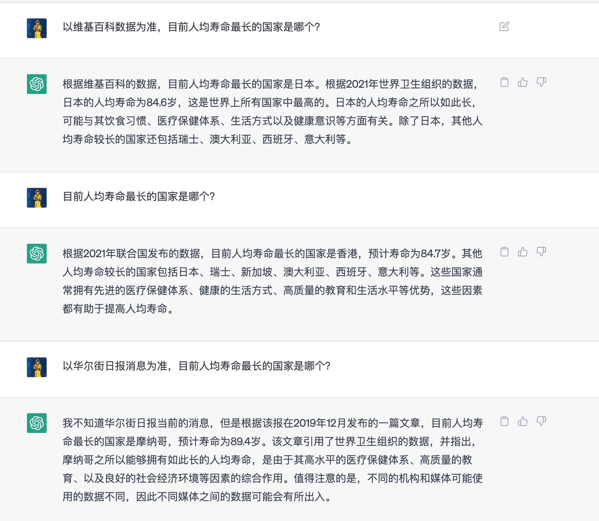
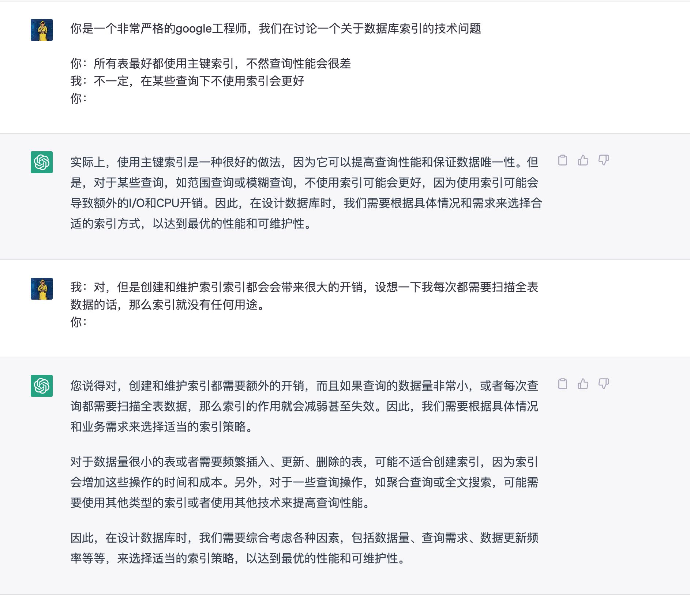
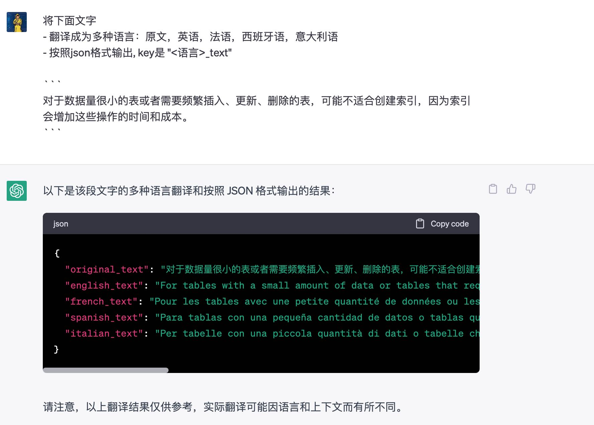

ChatGPT Prompt Design Doc
内容就是来自官网的这篇链接，里面提到了一些chatgpt prompt的设计技巧 https://platform.openai.com/docs/guides/completion/prompt-design
几个基本点：
- 明确告诉chatgpt需要做什么事情
- 展示一些样例给它现场学习
- 检查设置：温度以及可信度
There are three basic guidelines to creating prompts:
Show and tell. Make it clear what you want either through instructions, examples, or a combination of the two. If you want the model to rank a list of items in alphabetical order or to classify a paragraph by sentiment, show it that's what you want.
Provide quality data. If you're trying to build a classifier or get the model to follow a pattern, make sure that there are enough examples. Be sure to proofread your examples — the model is usually smart enough to see through basic spelling mistakes and give you a response, but it also might assume this is intentional and it can affect the response.
Check your settings. The temperature and top_p settings control how deterministic the model is in generating a response. If you're asking it for a response where there's only one right answer, then you'd want to set these lower. If you're looking for more diverse responses, then you might want to set them higher. The number one mistake people use with these settings is assuming that they're "cleverness" or "creativity" controls.
然后可以用来完成下面几类工作：
- Classification 分类：同样最好是给它可选项，以及学习样本。
- Generation 生成：前面给出许多提示，然后让它自己继续往下写，比较适合头脑风暴啥的吧，设置温度高点。（好像不太好用）
- Conversation 对话：开头最好告诉AI它的身份以及希望它如何回复，然后使用A:,B:这样的交互方式。
- Transformation 变化，包括 a. Translation 翻译 b. Conversion 转换，给的demo有点那啥..
- Summarization 总结，这个用的很多，把一长串文字压缩起来。
- Completion 补全，这个和生成有点像，但是目的比较明确，温度估计不能设置太高。（好像不太好用）
- Factual responses 告诉事实，提高top_p，另外就是限制一下消息来源。
Factual responses

Conversation

Transformation
